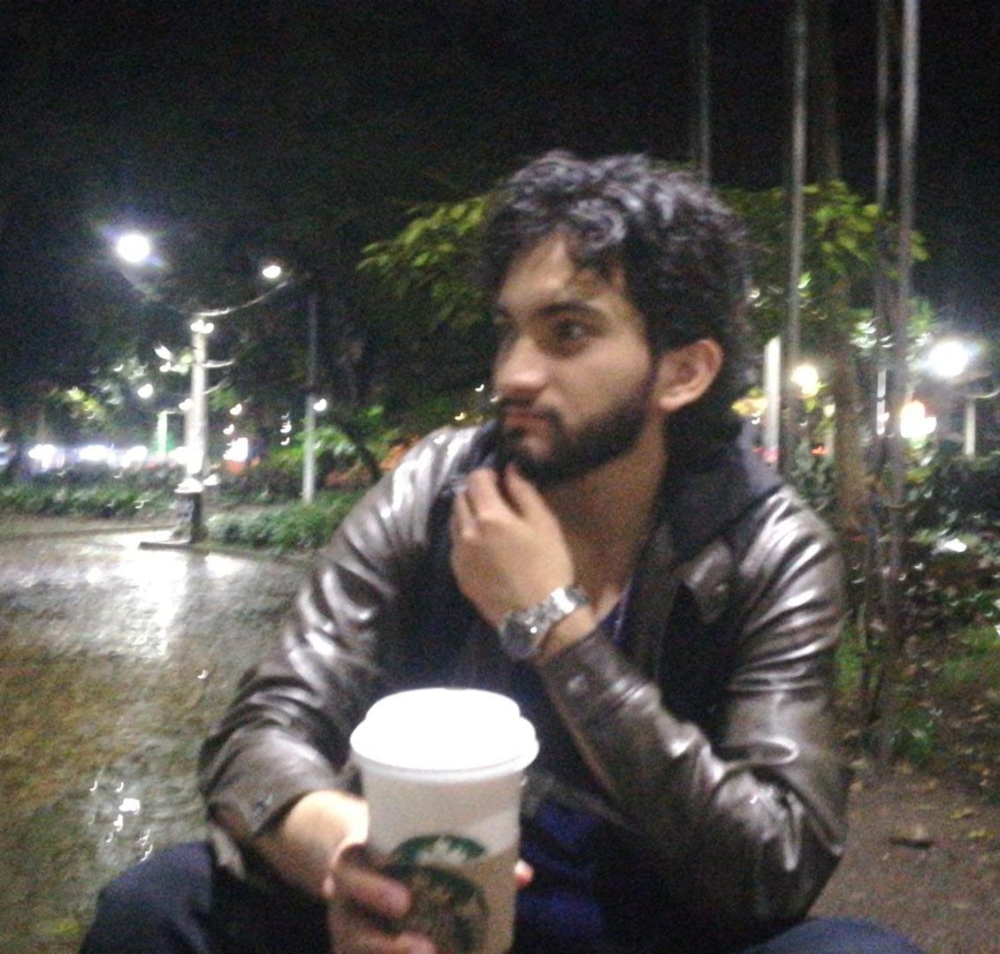
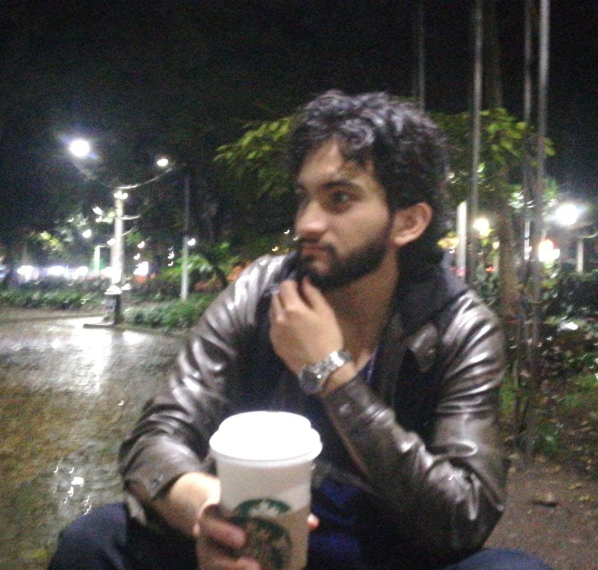

First steps
I'm Juan David Ruiz Olmos. I was born into a humble family in Pitalito, Huila. When I was 2 years old, my family moved to Puerto Rico, Caquetá, where I grew up. I studied until 9th grade in this town, but later my family relocated to Florencia, the capital of Caquetá, as my sister got into university. After that, we moved to Medellín.